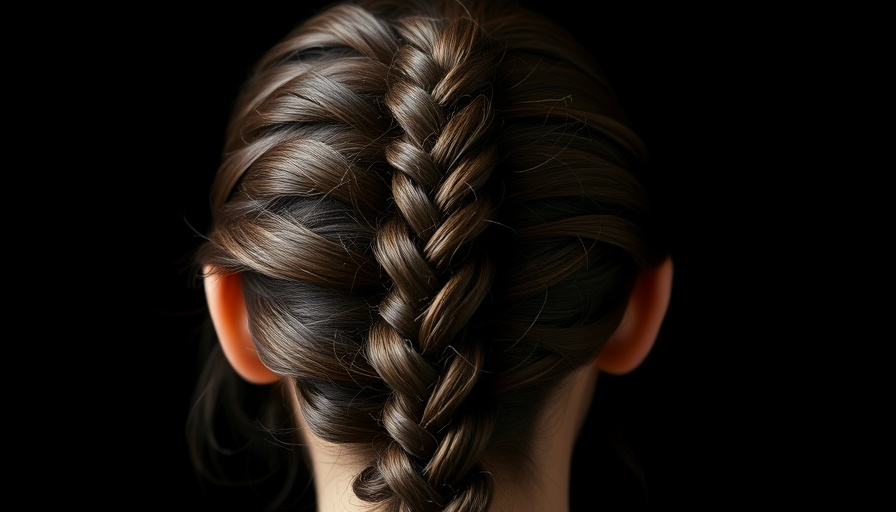
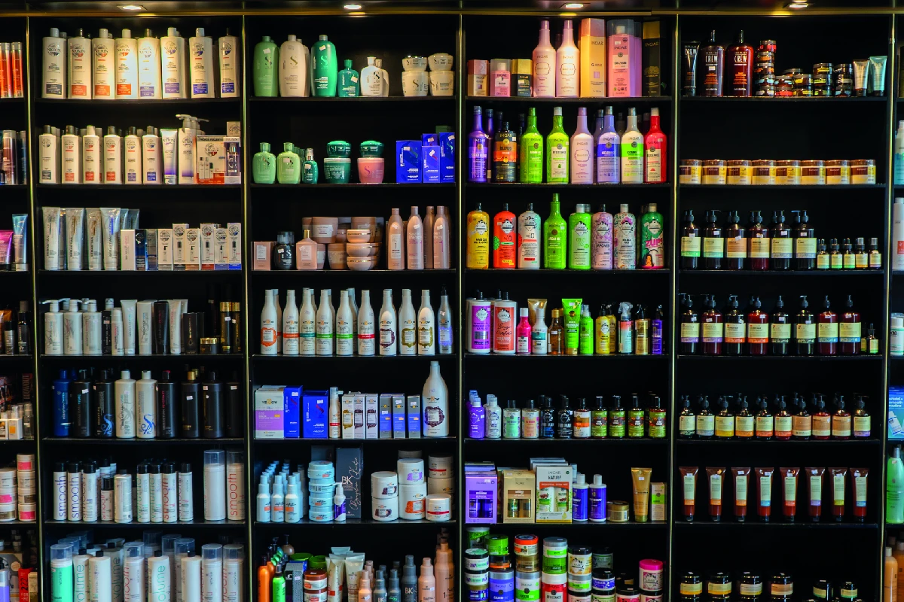
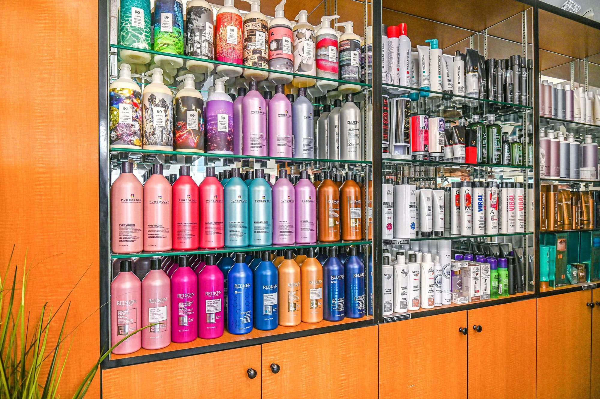

Braids and locs between appointments: the care that makes them last
By a KuuStore stylist, Published November 14, 2026, Last reviewed November 14, 2026
Three weeks after a fresh set of braids in Pembroke Pines, the style still looks new from the front. The trouble starts where you cannot see it: an itchy scalp, edges that feel sore, and locs that smell faintly sour when they get wet. Braids and locs do not fall apart all at once. They get neglected a little each day, and the weeks between appointments are where the style is saved or lost.
The short answer: Between appointments, do four things: wrap your hair in satin every night, wash your scalp every 1 to 2 weeks and dry it fully, mist and lightly oil the scalp every 2 to 3 days, and leave the roots alone instead of re-twisting them yourself. Braids are a 6 to 8 week style at the most, and locs want a professional retwist (twisting the new growth at the root so it locks in neatly) every 4 to 8 weeks. Care stretches a style to its full life. It does not stretch it past that.
Think of it like a garden, because the rules rhyme
Your scalp is soil and each braid or loc is a plant growing out of it. A garden does not need work every hour; it needs a little water on a schedule, weeds pulled before they spread, and nobody yanking on the plants to check the roots. Hair between appointments works the same way. Steady, small care beats one big rescue session the night before your stylist comes.

What do you do every night?
Cover it. Cotton pillowcases drink moisture out of hair and rub braids fuzzy while you sleep. A satin bonnet or scarf, or a satin pillowcase under loose hair, keeps the moisture in and the frizz down. For long braids and locs, gather the length loosely on top of your head first, so you are not sleeping on the ends. This one habit is worth more than any product in this post.
How do you wash hair that is braided or locked?
Wash the scalp, not the style. Every 1 to 2 weeks, work a diluted shampoo (shampoo mixed with water in a spray or squeeze bottle) along the parts and rows, massage with your fingertips, never your nails, and rinse well. Then dry fully, right down to the roots, with time in the air or a dryer on a warm setting. Here is the why, said two ways because it matters. First way: water left sitting at the root of a braid or inside a loc is like a wet towel left bunched in a Miami bathroom in November, it turns sour, and that mildew smell is very hard to wash out later. Second way: the scalp itself stays healthier when it is clean; build-up of sweat, skin, and product is what makes the itch that makes you scratch, and scratching is what frays the roots. Clean and fully dry solves both.

What goes on the scalp between washes?
Less than you think. Every 2 to 3 days, mist the hair lightly with water or a water-based leave-in spray, and smooth a few drops of a light oil along the parts if your scalp feels dry. November starts South Florida’s dry season, so scalps that were fine in August can feel tight now, that is the weather, not a product emergency. Skip heavy butters and thick gels between appointments. They sit on braids and inside locs, collect dust, and turn into the build-up your stylist has to wash out before she can even start.
What should you never do between appointments?
Do not re-twist your own roots tight, and do not pull loose hairs back in with a crochet hook (a tiny hook some people use to force stray hairs into a loc) unless you are trained on it, one slip can cut hairs inside the loc and thin it for good. Do not wear a ponytail in the same tight spot every day; edges and the locs at the hairline carry that pull, and hair pulled out by tension does not always grow back. And do not leave braids in past 8 weeks because they “still look okay.” Underneath, your own hair has grown about an inch, the braids hang from that new growth, and the weight is what snaps it.
A short routine that covers it

When is it time to book, not maintain?
Book the appointment when braids have been in 8 weeks, when locs have an inch or more of loose new growth, when edges feel sore, or when a sour smell survives a proper wash and full dry. Your KuuStore stylist looks after you at the shop, serving clients from across Miami-Dade, Broward, and Palm Beach, and a maintenance visit, edges redone, locs retwisted, scalp checked, costs your style weeks less than a full redo done too late.